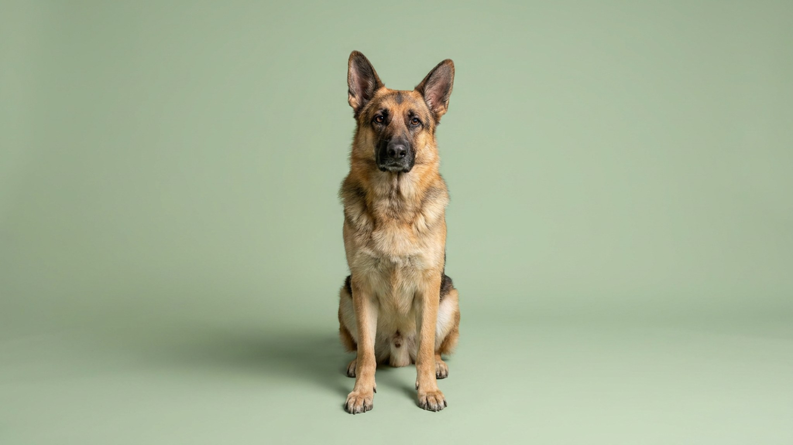

Кавказская овчарка весит до 70 кг и принимает самостоятельные решения — без команды хозяина. Эту породу тысячи лет отбирали не за послушание, а за способность защищать стадо от волков в одиночку. Именно поэтому новички, купившие «красивого пушистого щенка», оказываются с собакой, которую не могут контролировать. Ниже — честно о характере, социализации, содержании и о том, что стоит взвесить до того, как брать щенка.
🐾 У вас кавказская овчарка?
AnimaLife соберёт уход под породу: к каким болезням есть склонность, что проверять по возрасту, чем кормить и когда пора к врачу. Бесплатно, прямо в мессенджере.
Собрать план ухода → Собрать в MAX →
У вас iPhone? AnimaLife есть в App Store
Кавказская овчарка — территориальная порода с высоким охранным инстинктом. Она чётко разграничивает «своих» и «чужих» и принимает это решение самостоятельно. В быту это означает конкретные ситуации:
Это не агрессия ради агрессии — это рабочая функция породы. Но без управления она превращается в проблему.
Кавказская овчарка формирует отношение к миру в первые 3–5 месяцев жизни. Что не освоено в этот период, потом вводится через годы планомерной работы, а иногда не вводится совсем. Социализация — это не «познакомить с одним ребёнком», а систематическое знакомство со звуками, людьми, транспортом, другими животными и ситуациями.
Непоследовательность — главная ошибка при работе с кавказской овчаркой. Порода быстро определяет, где можно «продавить» хозяина, и использует это.
Кавказская овчарка создана для работы на открытом пространстве. Держать её в городской квартире — значит лишить собаку возможности реализовать базовые потребности. Минимум для нормальной жизни:
Щенка кавказской овчарки важно беречь от избыточных физических нагрузок в первые полтора года: крупная порода растёт долго, суставы и кости формируются медленно. Длинные пробежки, прыжки с высоты и перегрузки лучше исключить, пока ветеринар не даст добро.
У кавказской овчарки густой двойной подшёрсток. Два раза в год — весной и осенью — происходит интенсивная линька, которая длится несколько недель. В этот период вычёсывание нужно каждый день; в остальное время — 1–2 раза в неделю, чтобы шерсть не сваливалась и воздух проходил к коже.
Кавказская овчарка — порода, которая требует времени, опыта и ответственности. Перед тем как брать щенка, стоит честно ответить на три вопроса:
Если на все три вопроса ответ «да» — кавказская овчарка станет надёжным партнёром и защитником на годы.
🐾 Ваш питомец — кавказская овчарка?
Заведите профиль в AnimaLife: приложение запомнит породу, возраст и вес и будет подсказывать по уходу именно для неё. Вопросы AI-ветеринару — круглосуточно и бесплатно.
Завести профиль → Завести в MAX →
У вас iPhone? AnimaLife есть в App Store
🐾 Понравился разбор?
Подпишитесь на канал — каждый день разбираем по одному тревожному симптому у кошек и собак: что в пределах нормы, а когда пора к врачу. Подпишитесь, чтобы не пропустить разбор, который может спасти здоровье вашего питомца.
Материал носит информационный характер и не заменяет очную консультацию ветеринара.